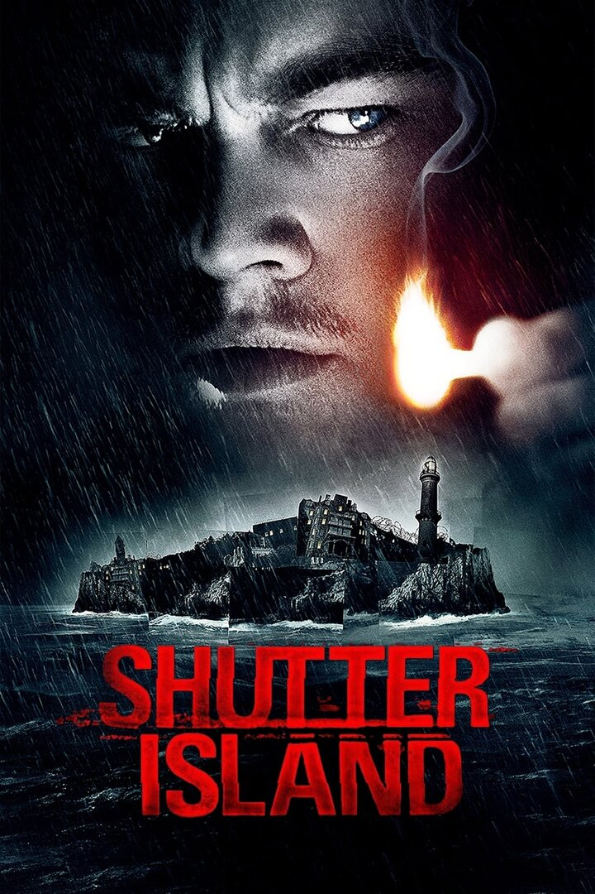

Остров проклятых
"Что хуже: жить монстром или умереть человеком?"
"Что хуже: жить монстром или умереть человеком?"
В 1954 году федеральный маршал США Тедди Дэниэлс прибывает на остров Шаттер, чтобы расследовать исчезновение пациентки из психиатрической клиники Эшклифф для душевнобольных преступников. Вместе со своим новым напарником Чаком Ауле он пытается разгадать тайну исчезновения Рэйчел Соландо.
По мере углубления в расследование Тедди начинает подозревать, что персонал больницы скрывает от него правду. Он убеждён, что на острове проводятся незаконные эксперименты над пациентами, и что его собственное присутствие здесь не случайно.
Однако реальность оказывается гораздо сложнее и болезненнее, чем может показаться на первый взгляд. Этот психологический триллер заставляет зрителя до последней минуты гадать: что реально, а что лишь плод воображения?
Леонардо ДиКаприо
Тедди Дэниэлс / Эндрю Лэддис
Марк Руффало
Чак Ауле / доктор Лестер Шихан
Бен Кингсли
доктор Джон Коули
Макс фон Сюдов
доктор Джеремайя Нэринг
Мишель Уильямс
Долорес Шейнал
Эмили Мортимер
Рэйчел Соландо
"Остров проклятых" исследует темы памяти, вины и самообмана. Фильм поднимает философские вопросы о природе реальности и границах человеческой психики. Вода в фильме символизирует подавленные воспоминания, а лабиринтная структура острова отражает запутанность сознания главного героя.
Скорсезе мастерски использует визуальные метафоры и звуковое оформление, создавая атмосферу неопределённости, где граница между реальностью и галлюцинациями размыта до неузнаваемости.